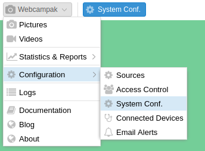
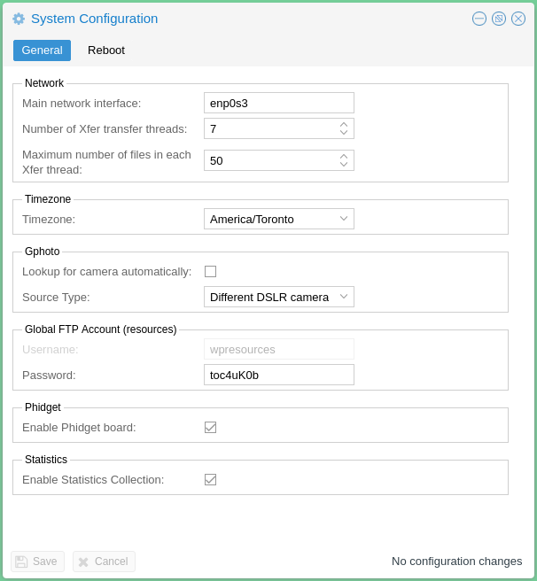

System
The system configuration screen can be accessed by clicking on "Webcampak > Configuration > System Conf.".

It is used for general and non-source-specific settings.

General
Network
- Main network interface: A webcam can operate with multiple active network interface, this setting is used to specify which one should be used to collect statistics. This is typically the Internet-connected interface.
- Number of Xfer transfer threads: Define the number of transfer queues. This number depends on of the number of CPU cores and RAM available on the Webcampak. A higher number means more files can be transferred to various remote locations, but this also implies a greater amount resources being used.
- Maximum number of files in each Xfer thread: Each queue will be provisioned regularly with a specific number of jobs. This number should be set depending on bandwidth availability and Webcampak hardware performance.
Timezone
The local timezone of the Webcampak server.
Gphoto
Those 2 settings are only used when Webcampak is physically connected to multiple USB D-SLR cameras in order to understand how to differentiate those multiple cameras and identify their USB port.
Global FTP Account (resources)
Webcampak is equipped with an FTP account giving access to Webcampak resources directory containing items such Webcampak database, logs, configuration files, queues, shared watermark, etc...
This directory does not provide access to sources.
Phidgets
Enable or not Phidgets board globally.
Statistics
Enable or not statistics collection
Reboot
This screen can also be used to trigger a Webcampak reboot.